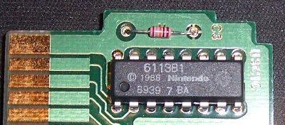
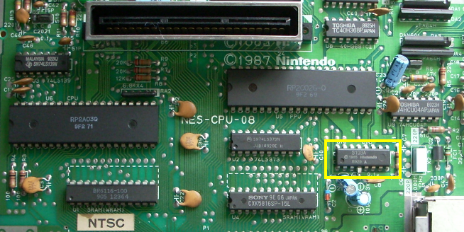
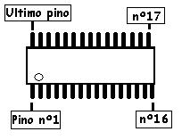
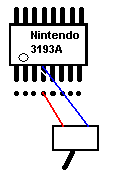

Desbloqueando o NES (Nintendinho)
 :::. Por Gigacom
:::. Por Gigacom
O Nintendinho é um console e tanto, e se não me engano, foi o primeiro a contar com um sistema anti-pirataria. O
funcionamento do sistema de bloqueio do NES é super simples, ele
conta com um chip instalado na placa mãe (o autenticador) e um
chip instalado em todos os cartuchos originais do NES, que é o
que conversa com o chip da placa mãe para falar: é
nóis mano, deixa o cara jogar .
Sem o chip no cartucho, o NES fica resetando o jogo sem parar logo que é ligado,
impossibilitando que se faça qualquer coisa. Esse carinha nos
cartuchos tem nome e se chama 10NES, e ficou muito conhecido não
só por conta do bloqueio mas como tambem por ter causado pane em
milhares de cartuchos...
.
Sem o chip no cartucho, o NES fica resetando o jogo sem parar logo que é ligado,
impossibilitando que se faça qualquer coisa. Esse carinha nos
cartuchos tem nome e se chama 10NES, e ficou muito conhecido não
só por conta do bloqueio mas como tambem por ter causado pane em
milhares de cartuchos...
|  |
| Esse é o 10NES, o carinha que falta nos seus cartuchos piratas seu safado |
Felizmente, esse é o bloqueio por chip mais simples de se remover do mundo dos video games,
com uma chave estrela, e com a ajuda do alicate de unhas da sua
mãe, não haverá Nintendinho que resista ao
desbloqueio .
Para realizar tal proeza, pegue o seu NES e desmonteo-o completamente,
é preciso ter a placa mãe livre para manuseá-la.
Após desmontado, localize o unico chip com a marca Nintendo na
placa mãe, ele é o chip autenticador e está
destacado na foto abaixo:
.
Para realizar tal proeza, pegue o seu NES e desmonteo-o completamente,
é preciso ter a placa mãe livre para manuseá-la.
Após desmontado, localize o unico chip com a marca Nintendo na
placa mãe, ele é o chip autenticador e está
destacado na foto abaixo:

Na
foto acima, o chip já está modificado (veja como está levantado o quarto pino do chip). O segredo todo
é simples, basta remover o pino de nº 4 do chip, e pronto !
o NES já passa a aceitar jogos piratas. Claro, você
não precisa meter um alicate comum ali e arrancar o pino como
quem
arranca dente quebrado de cachorro, basta você cortá-lo
com um alicate de unhas por exemplo (que possui uma ponta pequena e
afiada, ideal para essa operação), e levantá-lo um
pouquinho
para que ele não entre em contato com a placa mãe de
novo. Simples não
!
o NES já passa a aceitar jogos piratas. Claro, você
não precisa meter um alicate comum ali e arrancar o pino como
quem
arranca dente quebrado de cachorro, basta você cortá-lo
com um alicate de unhas por exemplo (que possui uma ponta pequena e
afiada, ideal para essa operação), e levantá-lo um
pouquinho
para que ele não entre em contato com a placa mãe de
novo. Simples não ?
?
Para ter certeza de qual é o 4º pino, é só olhar aquela bolinha ali no canto do chip, ela indica qual é o pino nº 1, e depois é só continuar a contar a partir dos que estão do lado na mesma fileira, então, o pino de nº 2 será o que está do lado do 1, e não o que está acima, do outro lado do chip, dá uma olhada no exemplo ao lado.
Você tambem pode optar por instalar um switch ali naquela perninha do 4º pino que foi cortada, unindo-a ao ponto correspondente dele na placa mãe do console. Assim, se algum jogo original teimar em não funcionar no NES, é só mudar a chave do switch para abilitar o funcionamento do autenticador, e o NES passará a se comportar como antes com jogos originais e falsificados. Veja o diagrama abaixo, onde ilustro como seria a instalação de um switch nesse chip.
Uma
boa dica nesse caso, é primeiro soldar um fio na perninha
cortada do chip, e o outro fio no outro lado da placa mãe, no
mesmo ponto onde estava o pino. Digo isso porque, apesar de não
ser impossivel, vai ser um sufoco soldar dois fios naquele
espaço minusculo entre a perna cortada e a placa mãe .
.
O switch você pode encaixar naquele espaço da entrada do cartucho, na parte de cima à direita ou esquerda. Não irá atrapalhar a entrada de cartuchos e funcionará perfeitamente. Mas, recomendo instalar esse switch só se você tiver algum jogo que realmente não irá funcionar em um NES destravado, pois a maioria dos jogos funciona sem nenhum problema.
Acesse o Trombone e comente sobre essa matéria!